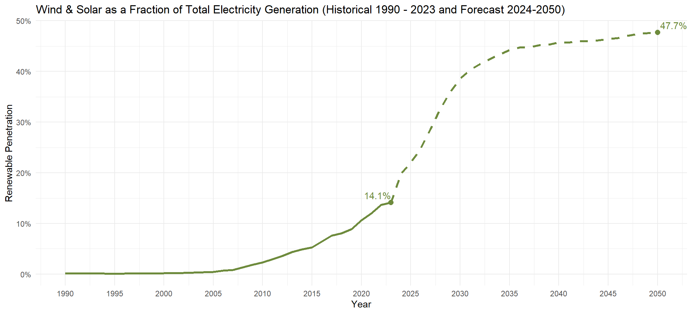
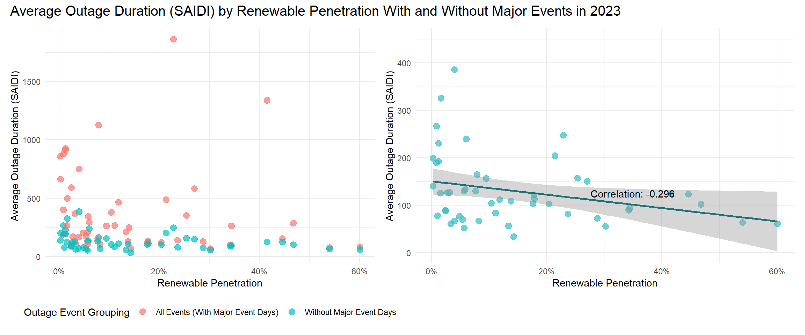

3.1 Setting the Scene: Renewable Integration in the U.S. Over Time
Understanding the trajectory of U.S. electricity generation over the past three decades provides context for the challenges and opportunities presented by renewable energy integration. The plot below serves as the foundation of our analysis, showing the shift in energy sources from 1990 to 2023. The total area adds up to the country’s total generation capacity in any given year. It highlights:
The decline of coal and petroleum-based generation
The rise of natural gas
The rapid growth of intermittent renewables (wind and solar), especially in the past decade
The consistency of other renewables, which include hydroelectric, geothermal, and biomass
We focus this analysis on wind and solar electricity generation because they provide clean but intermittent energy (after all, we can’t control when the wind is blowing and the sun is shining!). As the U.S. works to reduce carbon emissions and combat climate change, the grid will be more reliant on these intermittent energy sources, so understanding their impact on grid reliability is crucial.
Code
us_gen_data <-read.csv("US_generation.csv")colnames(us_gen_data)[1] <-"Year"us_gen_data <- us_gen_data |>filter(Year >=1990)data1_long <- us_gen_data |>select(Year, wind, solar, `coal`, `natural.gas`, `nuclear`, `other.renewables`, `petroleum.and.other`) |>pivot_longer(cols =-Year, names_to ="Energy_Source", values_to ="Generation")# Set factor levels (wind and solar at the top)data1_long$Energy_Source <-factor(data1_long$Energy_Source, levels =c("solar","wind","other.renewables", "nuclear", "natural.gas","petroleum.and.other", "coal"))# Area Chartggplot(data1_long, aes(x = Year, y = Generation, fill = Energy_Source)) +geom_area(alpha =0.8, position ="stack") +scale_fill_manual(values =c("coal"="gray10", "natural.gas"="gray50", "nuclear"="gray80", "other.renewables"="cornflowerblue", "petroleum.and.other"="gray30","wind"="green4","solar"="yellow")) +labs(title ="US Electricity Generation Capacity (MW) by Source 1990-2023",x ="Year",y ="Electricity Generation Capacity (MW)",fill ="Energy Source") +theme_minimal()
The plot above may give the impression that wind and solar currently contribute only a modest portion to the U.S. energy mix. However, when we plot their share of the country’s total electricity generation from 1990 to 2023, we see a significant growth trajectory. Starting from near zero contribution in the 1990s, wind and solar now account for 14.1% of total generation as of 2023. This trend is expected to accelerate significantly in the coming decades. According to EIA forecasts, wind and solar are projected to reach nearly 50% of total electricity generation by 2050.
This “Wind & Solar as a Fraction of Total Electricity Generation” metric measures the share of electricity generation coming from intermittent sources, and is often referred to as a percentage value called “Renewable Penetration”.
Code
# Add a new column to calculate the fraction of wind + solar generationdata2 <- us_gen_data |>mutate(Total_Generation = wind + solar + coal + natural.gas + nuclear + other.renewables + petroleum.and.other,Wind_Solar_Fraction = (wind + solar) / Total_Generation )# Find the last data pointlast_point <- data2 |>filter(Year ==max(Year))# Load and prepare the forecast data in Rforecast <-read.csv("Renewable_Energy_Forecast.csv") |>select(Year, Solar_Wind_Fraction) |>rename(Solar_Wind_Fraction = Solar_Wind_Fraction)# Combine the historical and forecast data for plottingcombined_data <-bind_rows( data2 |>select(Year, Wind_Solar_Fraction) |>rename(Fraction = Wind_Solar_Fraction), forecast |>rename(Fraction = Solar_Wind_Fraction))# Find the last data pointlast_point2 <- forecast |>filter(Year ==max(Year))# Plot with the forecastggplot(data2, aes(x = Year, y = Wind_Solar_Fraction)) +geom_line(color ="darkolivegreen4", linewidth =1.2) +geom_line(data = forecast, aes(x = Year, y = Solar_Wind_Fraction),color ="darkolivegreen4", linetype ="dashed", linewidth =1.2) +geom_point(data = last_point, aes(x = Year, y = Wind_Solar_Fraction), size =2.5, color ="darkolivegreen4") +geom_text(data = last_point, aes(label = scales::percent(Wind_Solar_Fraction, accuracy =0.1)),vjust =-0.5, hjust =1, color ="darkolivegreen4") +geom_text(data = forecast |>filter(Year ==2050),aes(x = Year, y = Solar_Wind_Fraction,label = scales::percent(Solar_Wind_Fraction, accuracy =0.1)),vjust =-0.5, hjust =-0.1, color ="darkolivegreen4") +geom_point(data = last_point2, aes(x = Year, y = Solar_Wind_Fraction), size =2.5, color ="darkolivegreen4") +labs(title ="Wind & Solar as a Fraction of Total Electricity Generation (Historical 1990 - 2023 and Forecast 2024-2050)",x ="Year",y ="Fraction of Total Generation") +theme_minimal() +scale_y_continuous(labels = scales::percent_format())+scale_x_continuous(breaks =seq(1990, 2050, by =5))

3.2 Grid Reliability:
Grid reliability ensures that electricity is consistently available to meet the needs of homes, businesses, and critical services. As the U.S. transitions to a cleaner energy grid, understanding renewable energy’s impact on reliability is very important. The two key metrics the EIA uses to measure grid reliability are CAIDI and SAIDI, which help quantify the frequency and duration of power outages experienced by consumers:
CAIDI: Customer Average Interruption Duration Index. It is average number of minutes it takes to restore non-momentary electric interruptions.
SAIDI: System Average Interruption Duration Index. It is the minutes of non-momentary electric interruptions, per year, the average customer experienced.
Higher CAIDI and SAIDI values indicate a less reliable grid, where interruptions/outages are either more frequent, take longer to restore, or both.
In the plot below, the comparison of reliability metrics on the left (including all major events) and the right (excluding major events) demonstrates a relationship between grid reliability and “major event days”, described by the EIA as “any day that exceeds a daily SAIDI threshold”. When all major events are included, the plot shows significant spikes in some years: 2017, 2020, and 2021. Conversely, when major events are excluded, the metrics remain relatively stable over time, suggesting that the underlying reliability of the grid is not significantly affected by increasing renewable energy penetration, and is rather driven by the occurrence of these “major events” that we investigate in section 3.5.
Code
t1_reliability <-read.csv("T1_Reliability.csv")t1_reliability <- t1_reliability |>filter(`Event_Category`%in%c("IEEE_All_Events", "IEEE_No_Major_Events"))t1_reliability$Year <-as.integer(t1_reliability$Year)# Reshape the data to a long format for plottingdata3_long <- t1_reliability |>pivot_longer(cols =c(SAIDI, CAIDI), names_to ="Metric", values_to ="Value")# Plot the line graph faceted by Event Categoryggplot(data3_long, aes(x = Year, y = Value, color = Metric)) +geom_line(linewidth =1.2) +scale_x_continuous(breaks =seq(2013, 2023, 1)) +scale_y_continuous(limits =c(0, 550), expand =c(0, 0)) +labs(title ="Reliability Metrics (2013–2023)",x ="Year",y ="Value",color ="Metric") +facet_wrap(~`Event_Category`) +theme_minimal()
3.3 Is there any correlation between renewable penetration and grid reliability?:
INSERT MOLLY’S CORRELATION PLOTS
3.4 Is there a geographic explanation?
We want to investigate if any states stand out when we focusing on high SAIDI years, when including all events. In other words, what states are responsible for “Major Events” in high-disruption years.
By mapping total outage hours across high-disruption years (2017, 2020, 2021), this plot highlights states disproportionately affected by outages. We suspect this is due to extreme weather events such as winter storms and hurricanes, underscoring the intersection of climate resilience and energy grid reliability.
In 2017: Maine, Vermont, and Florida stand out
In 2020: Maine, Connecticut, Mississippi, Alabama, and Louisiana stand out
In 2021: Texas, Oregon, and Louisiana stand out
To provide a clearer perspective, the outage values are capped at 24 hours, representing a cumulative full day of outages over the course of a year. This approach highlights states with particularly disruptive events while maintaining focus on severe reliability issues. Without capping, we risk losing important granularity, as excessively high values from outlier events could overshadow state-by-state comparisons and trends.
Code
data5 <-read.csv("T4_ReliabilityByState.csv")# State abbreviations and full namesstate_abbrev <-tibble(state_full =tolower(state.name),state_abbrev = state.abb)filtered_data5 <- data5 |>filter(Method =="IEEE", Event_Grouping =="All Events (With Major Event Days)", Census_Division %in%c(2017, 2020, 2021),!is.na(Census_Division)) |>select(-Method, -Event_Grouping, -HI, -AK)# Reshape the data into a long formatlong_data5 <- filtered_data5 |>pivot_longer(cols =-Census_Division, names_to ="state_abbrev", values_to ="value")# Convert values from minutes to hours and cap at 24 hourslong_data5 <- long_data5 |>mutate(value =pmin(value /60, 24)) # Load state geometriesus_states <-st_as_sf(maps::map("state", plot =FALSE, fill =TRUE))us_states <- us_states |>mutate(state_full = ID) |>left_join(state_abbrev, by =c("state_full"="state_full")) # Merge data with geometriesmapped_data <- us_states |>left_join(long_data5, by =c("state_abbrev"="state_abbrev")) |>filter(state_abbrev !="DC")# Plot the map with facets for Census Divisionggplot(data = mapped_data) +geom_sf(aes(fill = value), color ="white", lwd =0.2) +scale_fill_viridis_c(option ="viridis", na.value ="gray80", limits =c(0, 24)) +labs(title ="U.S. Outage Hours by State in High-Disruption Years",fill =" Total Outage Hours\n (Capped at 24H)") +facet_wrap(~ Census_Division, ncol =1) +# Facet by Census Divisiontheme_minimal() +theme(axis.text =element_blank(),axis.ticks =element_blank(),panel.grid =element_blank(),strip.text =element_text(size =12) )

3.5 Confirming that these standouts are caused by extreme weather events:
Each high-disruption states and year can be linked to an of extreme weather event, such as a winter storm, a hurricane or a tornado. By year, the events are as follows:
The news articles and websites linked above tie these weather events to power outages, and the plot below confirms that this daily outage minutes spike in times of extreme weather. The plot shows daily outage metrics in Texas over the course of 2021, with the dates of Winter Storm Uri (February 10-25) highlighted in blue. As we expected, the highest number of outage minutes, by a large measure, lands within these storm days.
Code
# Read the datasaidi_data <-read.csv("Texas_Daily_SAIDI.csv")# Convert Date column to Date typesaidi_data$Date <-as.Date(saidi_data$Date, format ="%m/%d/%y")highlight_period <-data.frame(xmin =as.Date("2021-02-10"),xmax =as.Date("2021-02-25"),ymin =-Inf,ymax =Inf,label ="Winter Storm Uri")# Plot the dataggplot(saidi_data, aes(x = Date, y = Daily.SAIDI)) +geom_rect(data = highlight_period, aes(xmin = xmin, xmax = xmax, ymin = ymin, ymax = ymax, fill = label),alpha =0.8, inherit.aes =FALSE) +scale_fill_manual(name ="", values =c("Winter Storm Uri"="lightblue")) +geom_line(color ="black", linewidth = .75) +labs(title ="Daily SAIDI (Outage Minutes) in Texas in 2021",x =NULL,y ="SAIDI (Outage Minutes)") +theme_minimal() +theme(legend.position ="top")